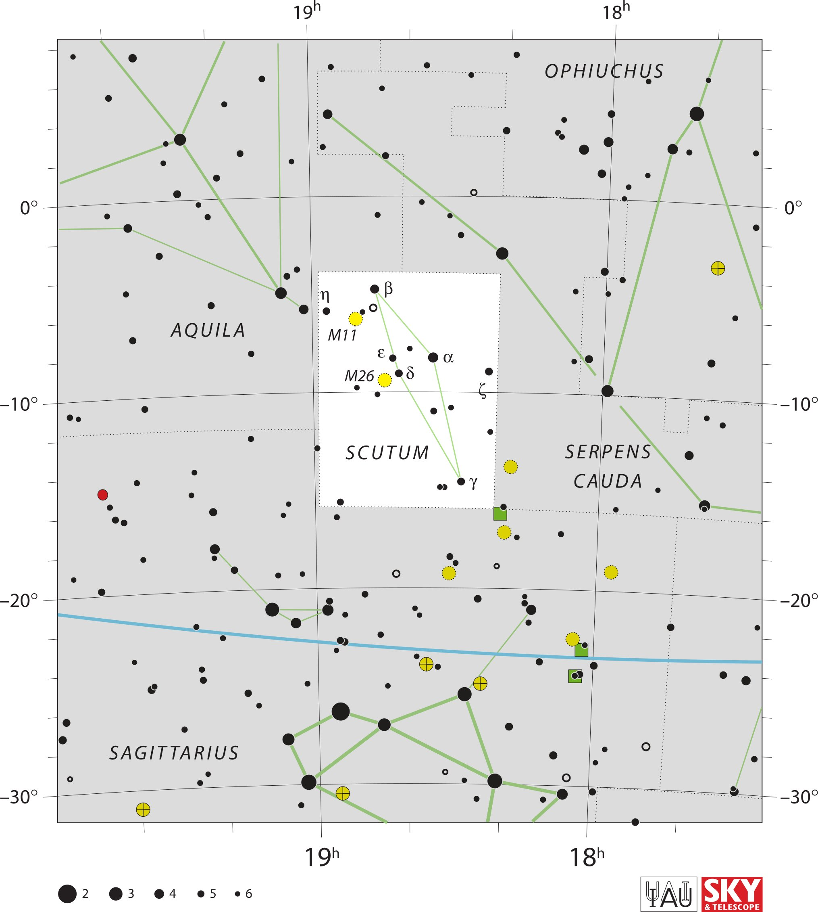

<div data-role="page" id="scutum" data-theme="a">

	<div data-role="header">
		<a href="#home" data-icon="back" data-rel="back">Back</a>
		<h1>Scutum</h1>
		<a href="#home" data-icon="home">Home</a>
	</div>

	<div data-role="content">
		<div class="cssImageMap">
			


			<a href="../messier/m11.html" class="messier" data-x="810"
				data-y="750" data-width="100" , data-height="110"></a>

			<a href="../messier/m26.html" class="messier" data-x="840"
				data-y="900" data-width="140" , data-height="90"></a>


			<a href="ophiuchus.html" class="constellation" data-side="right"
				data-x="1340" data-y="140" data-width="350" data-height="70"></a>

			<a href="serpensCauda.html" class="constellation" data-side="right"
				data-x="1390" data-y="1080" data-width="250" data-height="140"></a>

			<a href="sagittarius.html" class="constellation" data-side="left"
				data-x="250" data-y="1830" data-width="350" data-height="70"></a>

			<a href="aquila.html" class="constellation" data-side="left"
				data-x="400" data-y="780" data-width="250" data-height="70"></a>

		</div>

		<div id="here">
			<h2>Scutum</h2>

			<p>Image Credit: IAU and Sky & Telescope magazine (Roger Sinnott
				& Rick Fienberg)
		</div>
	</div>
</div>